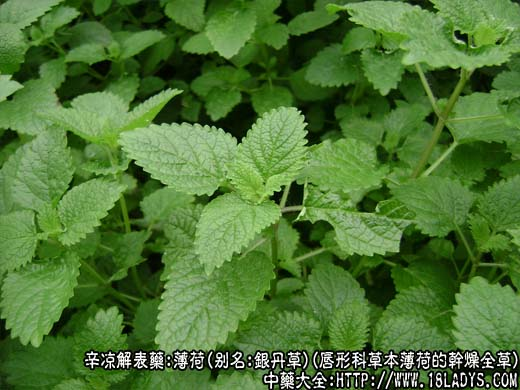
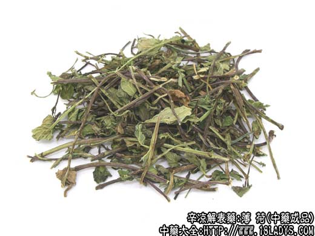
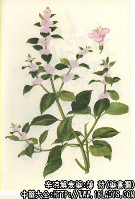

薄荷为常用和中药。始载《唐本草》。
别名：银丹草。
来源：唇形科多年生草本植物薄荷的干燥全草。均为栽培。
植物形态：草木，多年生，茎方形，被逆生长柔毛，全株有辛凉香气。单叶对生，长卵形或椭圆形，叶缘锐锯齿状。花在腋部成轮状花序，花冠略成二唇形，淡红色或紫色。四枚小坚果，藏于宿存厚膜质的萼筒内。
产地：全国大部分地区均产，以江苏、太仓、河北安国、江西、湖南等地产量大、质量好。
性状鉴别：干燥后，叶多卷曲皱缩或破碎，气芳香，搓碎时更显著。味辛而凉。薄荷的收割北方一年二次，江南一年三次，习称头刀、二刀、三刀。头刀茎长而粗，二刀茎匀、叶多，含油量多质量好，三刀者茎细叶薄。
以条匀，叶密，紫红梗有白毛，香气浓，叶绿者为佳。
主要成分：含挥发油，其中主要含薄荷脑、薄荷脑、薄荷酮；此外，尚含樟烯、柠檬烯等。
功效与作用：疏散风热，其作用为：1、消炎；2、镇痛；3、健胃祛风；4、止痒。
炮制：切咀，生用。
性味：辛凉。
归经：入肺、肝经。
功能：发汗，散风热。
主治：外感发热、头痛、咽喉肿痛。
临床应用：作为辅助药，主要用于协助疏散风热。
1、用于治疗外感风热（感冒、上呼吸道炎等）。作为发汗解表的辅助药，特别适宜于有头痛、眼红、咽喉肿痛的患者，除有解表作用外，还可使咽喉部发炎的粘膜局部血管收缩，减轻肿胀和疼痛。常配荆芥、防风、或桔梗、甘草等同用。
2、协助其他解表药透疹。用于麻疹初期，疹透不快，配升麻、葛根、蝉蜕等。
3、用于治疗夏季感暑的头昏、发热、口渴、小便短赤。可疏解风热，配石膏、甘草、方如鸡苏散。
使用注意：肺虚咳嗽、阴虚发热不宜用；哺乳妇女一般不宜多用，因薄荷有退乳的副作用。
用量：2.4～6g，入煎剂要后下。
处方举例：鸡苏散《伤寒标本》：薄荷3g（后下），生甘草3g，滑石18g，水煎服，或共研粗末焗服，但以水煎服较好。
注：苏州尚产一种龙脑薄荷，茎上部螺旋状，雄蕊短于花冠，叶片厚，气味浓，供出口。
野薄荷与家薄荷外形相似，但茎细弯曲，叶小而稀疏，气弱。北方产头刀薄荷茎长、色紫、叶大、质优，二刀较次。